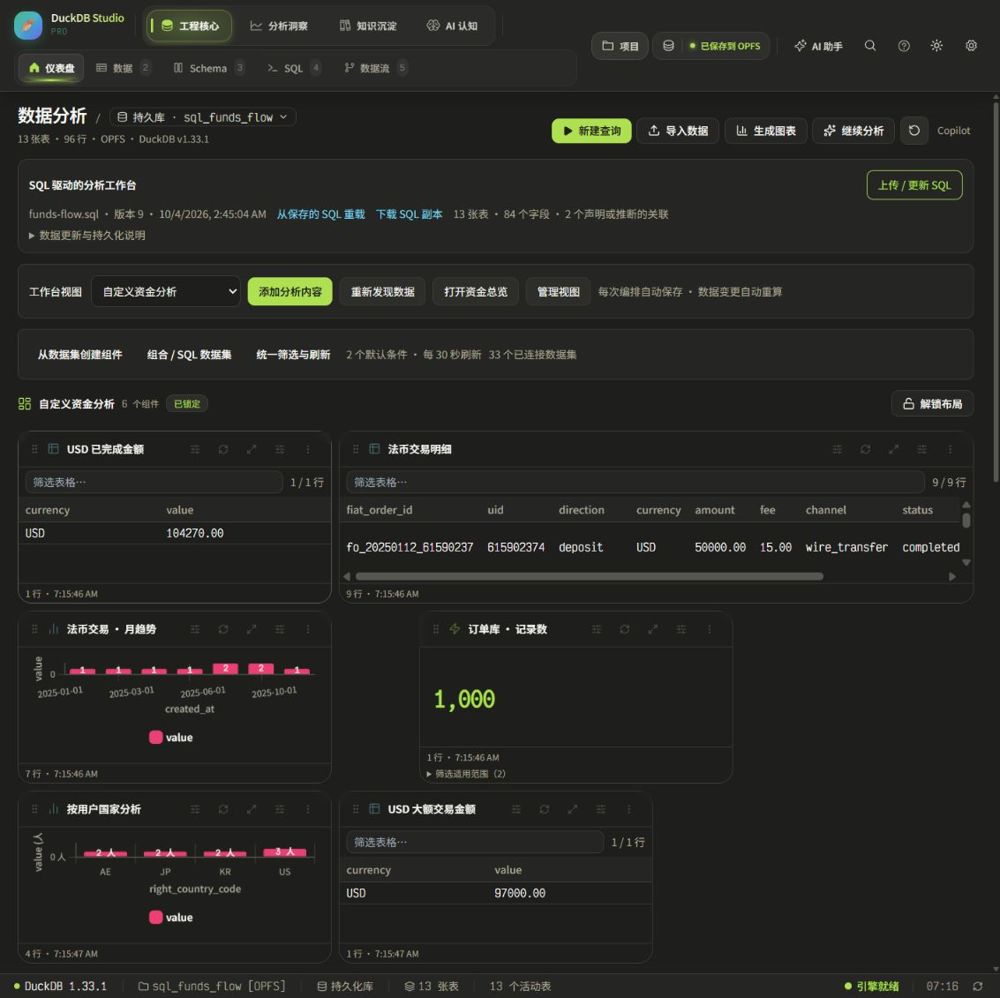
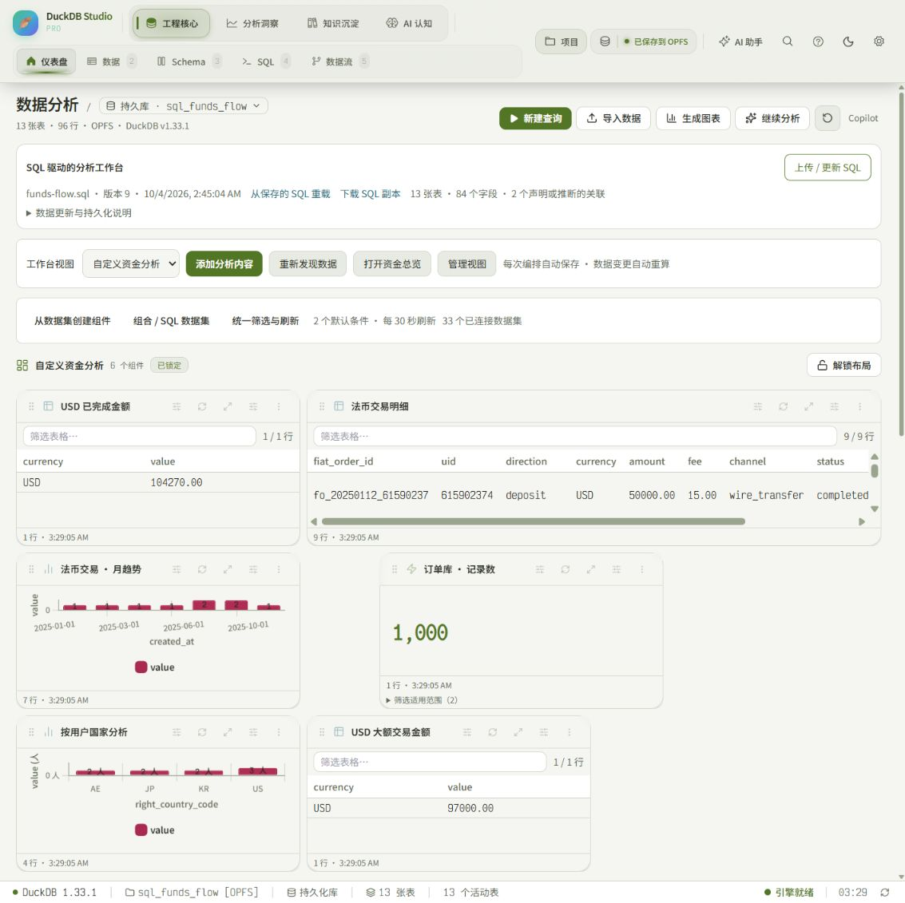
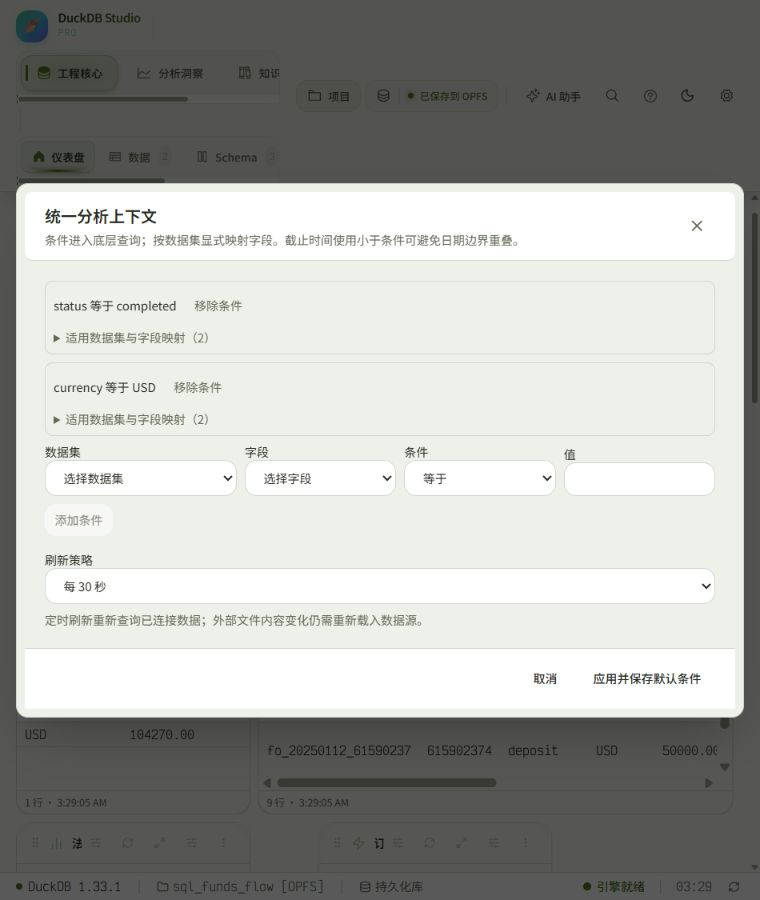

2026-10-04 · DuckDB Studio · 本地真实数据验收
可自由构建的分析工作台
首个可用版本已落地。保留现有 Monokai 风格与原业务定义，建立从数据集、组件到编排、联动重算和持续编辑的闭环。
104,270.00已完成 USD 金额 · 9 笔明细
97,000.00相同来源的独立大额实例
50,000.00点击一月后 · 1 笔明细
1,000另一数据库的订单组件
已交付的能力
| 数据集 | 独立数据集、跨附加库同屏、左/内关联、UNION ALL、只读 SQL，定义可持续编辑 |
|---|
| 组件 | 已有内容库 + 指标、趋势、分布、明细；实例局部条件和展示独立保存 |
|---|
| 编排 | 拖拽移动、尺寸调整、布局锁定；视图创建、重命名和复制 |
|---|
| 上下文 | 显式字段映射、全局与局部条件、按月半开区间点击联动；不适用条件明确显示 |
|---|
| 重算 | 聚合前筛选、参数绑定、完整源数据聚合、输出分页、自动/定时/手动刷新 |
|---|
| 持久化 | 来源身份、实例、默认条件、布局和刷新策略保存；旧格式兼容和来源失效恢复 |
|---|
当前可直接使用的首页

工作台视图选择「自定义资金分析」。已保存六个组件、两个默认条件、30 秒刷新与锁定布局。原资金总览的 11 个组件已回归检查。
界面验收

浅色模式 · 两个金额实例互相独立

窄窗口 · 筛选条件和操作保持可访问
验证结果
- 最新相关回归：9 个文件、44 项通过。
- 独立 DuckDB 验算：10 项通过；测试数据仅在独立内存库。
- 类型检查与生产构建通过。
- 固定代码后的全量回归：215 个文件、1,683 项全部通过。
能力边界
已形成可构建的本地分析工作台。外部数据实时检测、任意复杂 SQL 自动绑定、多联动组、语义模型历史治理、完整撤销、团队权限和云协作仍是后续能力。组件输出每页 100 行；高基数组图会明确提示当前页范围。
可视化关联持续校验右侧唯一键。自定义 SQL 关联需要用户确认基数；已聚合 SQL 数据集的筛选约束输出关系，不能宣称改变了其内部源行。
完整实施记录与验收边界 · 相关回归日志 · 独立引擎验算 · 最终全量回归